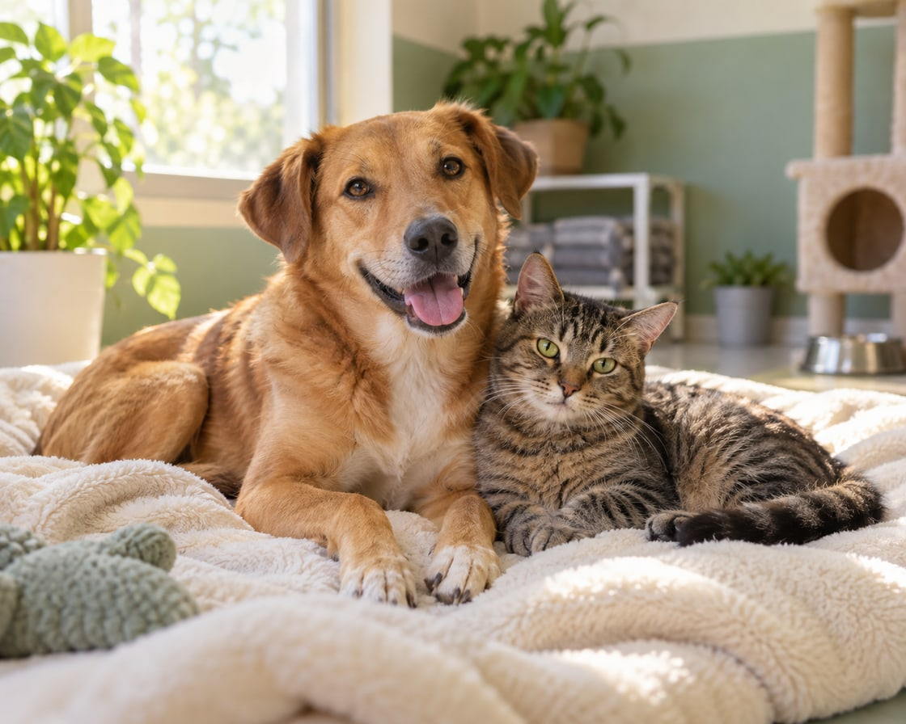

Acolher
Oferecer abrigo temporário, alimentação e segurança aos animais em situação de abandono.
Conhecer o acolhimentoAcolhimento • Cuidado • Adoção
Um lugar seguro para quem perdeu o lar. Uma rede de cuidado para encontrar uma família de novo.
Conheça a proposta de atuação do nosso abrigo fictício.

Quem somos
O Abrigo Novo Lar é uma ONG fictícia dedicada ao acolhimento de cães e gatos desabrigados. Sua proposta reúne resgate, cuidados básicos, acompanhamento veterinário e adoção responsável.
Nossa missão é oferecer proteção e dignidade aos animais, conectando cada um a pessoas dispostas a cuidar. Atuamos com respeito, transparência e compromisso com o bem-estar animal.
Nossa forma de cuidar
Oferecer abrigo temporário, alimentação e segurança aos animais em situação de abandono.
Conhecer o acolhimentoPromover avaliação veterinária, higiene e recuperação, respeitando as necessidades de cada animal.
Conhecer a rede de cuidadoEstimular a adoção responsável e orientar as famílias sobre os cuidados necessários.
Conhecer a proposta de adoçãoUma causa. Muitas formas de ajudar.
Voluntariado, apoio material e divulgação: cada gesto amplia a rede de proteção.